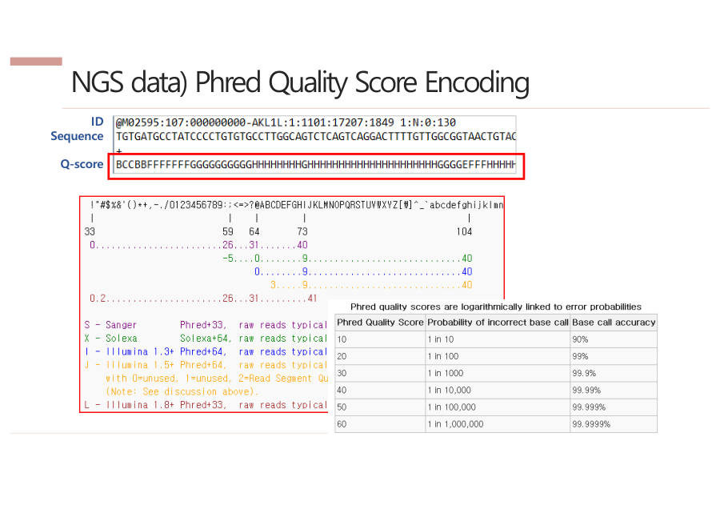

FASTQ는 어떤 파일인가
FASTQ는 NGS 기계가 찍은 사진을 글자로 바꾼(base calling) 결과 파일이에요. 조각(read) 하나가 4줄로 적혀요.
기계는 조각마다 형광 사진을 찍어요. 사진 속 색을 A·T·G·C 글자로 바꾸는 일이 base calling(베이스 콜링)이에요. FASTQ는 그 글자와 "이 글자를 얼마나 믿을 수 있는지" 점수를 함께 적은 노트예요.
아래가 실제 모양이에요. 4줄이 한 세트이고, 한 세트가 조각 하나예요.
| 줄 | 뭐가 적혀 있나 |
|---|---|
| 1 | ID — @로 시작. 기계 판의 레인·타일·x,y 좌표 = 조각의 주소. 주소라서 겹치면 안 돼요 (같으면 오류) |
| 2 | 서열 — 읽은 ATGC. N = 색이 섞여서 무슨 글자인지 못 읽은 자리 |
| 3 | + — 그냥 구분선 |
| 4 | 품질 점수 — 2번 줄 글자 하나하나를 얼마나 믿을 수 있는지, 문자 한 개로 표시 |
이름표 → 글자 → + → 점수 순서로 외우세요.
1번 줄의 ID를 더 볼게요. 기계 속 유리판(flow cell)은 레인(길)으로 나뉘고, 레인은 타일(칸)로 나뉘고, 타일 안에는 점(클러스터)이 2~3만 개 있어요. 그래서 "몇 번 레인, 몇 번 타일, 가로 x, 세로 y"를 적으면 점 하나의 위치가 딱 정해져요.
ID는 택배 주소와 같아요. "○○시 ○○동 ○○번지"처럼 레인·타일·x·y로 점의 위치를 적어요. 같은 주소가 두 개면 안 되니까, 같은 ID가 나오면 오류예요.
2번 줄의 N은 여러 색이 섞여 글자를 알아보지 못한 자리예요. 시험 문제로 자주 나와요. 그 자리는 잘못 읽었을 가능성이 커요.
4번 줄을 보면 2번 줄과 글자 수가 항상 같아요. 위 예시는 둘 다 32글자예요. 글자 하나에 점수 하나가 짝으로 붙어 있기 때문이에요.

FASTQ는 read 하나가 4줄로 구성된다. 1줄은 @로 시작하는 ID(레인·타일·x,y 좌표 기반의 고유값), 2줄은 염기서열(N은 염기를 판별하지 못한 자리), 3줄은 구분자 +, 4줄은 염기마다의 품질 점수이다.
잠깐 확인 — FASTQ의 첫 줄 ID가 같은 read가 두 개 있다면 어떤 상태인가요?
오류예요. ID는 점의 위치 주소라서 read마다 달라야 하기 때문이에요.